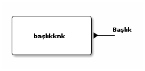
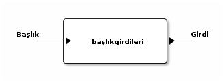
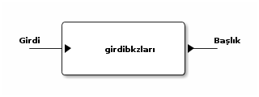
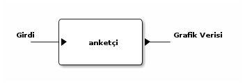
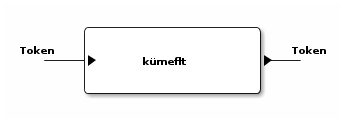
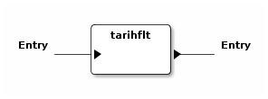
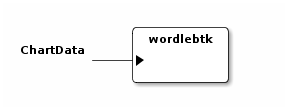

ssg++ bileşenleri
İçindekiler
ssg++ bileşenleri
Aşağıda ssg++ için tanımlanmış, iş hattı oluştururken kullanabileceğiniz bileşenleri bulabilirsiniz.
Kaynaklar (knk)
Kaynaklar iş hatlarının başlarında bulunan bileşenlerdir. Değişik sorgularla veri çekip iş hattının geri kalanını beslerler.
hayvanknk
| Adı | hayvanknk |
| İşlevi | ekşi sözlük'teki hayvan ara formunun sağladığı şekilde arama yapılmasını sağlar. |
| Girdi kapısı | - |
| Çıktı kapısı | 1 tane. Kapıdan geçen veri tipi Başlık. |
| Örnek kullanım | - |
Parametreleri
| parametre | alabildiği değerler | açıklama | varsayılan değeri |
|---|---|---|---|
| şey | kısıtlama yok | verilen kelimeleri içeren başlıkları arar. '*' kullanılabilir. | yok |
| yazar | kısıtlama yok | verilen yazara ait başlıkları buldurur. | yok |
| tarih | gg.aa.yyyy, aa.yyyy, yyyy, bugün, dün | verilen tarihte girdileri başlıkları buldurur. | yok |
| sıralama | yeni-eski, alfa-beta, gudik, rastgele | giriş zamanına göre, alfabetik olarak, en çok girdi yapılan başlığa göre ya da rastgele sıralar. | yeni-eski |
| limit | 50, 100, 150, 200, … 50n | aranan başlık adetini kısıtlar. 50 ve katları olmalıdır. | sonsuz |
| güzelinden | evet, hayır | güzel girdileri olan başlıkları buldurur. | hayır |
Görsel gösterimi

badiknk
| Adı | badiknk |
| İşlevi | ekşi sözlük'teki badi düğmesinin sağladığı şekilde son badi başlıklarının bulunmasını sağlar. |
| Girdi kapısı | - |
| Çıktı kapısı | 1 tane. Kapıdan geçen veri tipi Başlık. |
| Örnek kullanım | - |
| Parametreleri | - |
Görsel gösterimi
başlıkknk
| Adı | başlıkknk |
| İşlevi | verilen parametrelere göre Başlık tipinde bir veri oluşturur. |
| Girdi kapısı | - |
| Çıktı kapısı | 1 tane. Kapıdan geçen veri tipi Başlık. |
| Örnek kullanım | - |
Parametreleri
| parametre | alabildiği değerler | açıklama | varsayılan değeri |
|---|---|---|---|
| başlık | kısıtlama yok | oluşturulmak istenen başlığın adı. | ekşi sözlük |
| dosyadanbaşlık | kısıtlama yok | bir temaya ait birden fazla başlığı çıktı kapısına yazmak için başlıkların listelendiği dosya adı. | - |
Görsel gösterimi

istatistikknk
| Adı | istatistikknk |
| İşlevi | geçen haftanın girdilerinden istatistiklerde görünenleri listeler. |
| Girdi kapısı | - |
| Çıktı kapısı | 1 tane. Kapıdan geçen veri tipi Başlık. |
| Örnek kullanım | - |
Parametreleri
| parametre | alabildiği değerler | açıklama | varsayılan değeri |
|---|---|---|---|
| tip | debe, ghebe, ghedçe, gheke | dünün en beğenilen, geçen haftanın en beğenilen, en dikkat çeken, en kötülenmiş girdileri | ghebe |
Görsel gösterimi

indeksknk
TODO: Dökümantasyon eklenecek.
dosyaknk
| Adı | dosyaknk |
| İşlevi | verilen dosyadaki girdileri çıkış kapısına yazar. |
| Girdi kapısı | - |
| Çıktı kapısı | 1 tane. Kapıdan geçen veri tipi Girdi. |
| Örnek kullanım | - |
Parametreleri
| parametre | alabildiği değerler | açıklama | varsayılan değeri |
|---|---|---|---|
| dosya | dosyabtk ile oluşturulmuş XML biçimli dosya adı (dosya yolu da mutlak ya da göreceli olarak verilebilir.) | okunmak istenen dosyanın adı. | dosyabtk.xml |
Görsel gösterimi
başlıkfarkknk
TODO: Dökümantasyon eklenecek.
cımbızknk
TODO: Dökümantasyon eklenecek.
Dönüştürücüler
Dönüştürücüler iş hatlarının ortalarında bulunan veri işleyip sonucu muhtemelen başka bir veri tipine sahip sonucu çıktı olarak üreten bileşenlerdir.
başlıkgirdileri
| Adı | başlıkgirdileri |
| İşlevi | girdi kapısındaki başlığa ait girdileri çıktısında oluşturur. |
| Girdi kapısı | 1 tane. Kapıdan geçen veri tipi Başlık. |
| Çıktı kapısı | 1 tane. Kapıdan geçen veri tipi Girdi. |
| Örnek kullanım | - |
Parametreleri
| parametre | alabildiği değerler | açıklama | varsayılan değeri |
|---|---|---|---|
| limit | kısıtlama yok | başlığa ait indirilecek girdi sayısı. | tümü (limitsiz) |
Görsel gösterimi

girdibkzları
| Adı | girdibkzları |
| İşlevi | girdi kapısındaki girdinin bkz ve görünmez bkz verilmiş başlıklarını çıktı kapısına yazar. |
| Girdi kapısı | 1 tane. Kapıdan geçen veri tipi Girdi. |
| Çıktı kapısı | 1 tane. Kapıdan geçen veri tipi Başlık. |
| Örnek kullanım | - |
| Parametreleri | - |
Görsel gösterimi

anketçi
Kullanımdan kalktı. (bkz: girdibkzları) (bkz: histogram) anketçi \(\rightarrow\) girdibkzları ! histogram
| Adı | anketçi |
| İşlevi | girdi kapısındaki girdilerde bkz veya görünmez bkz verilmiş başlıkları bkz verilme sayısına göre sıralayıp grafik verisi oluşturur. |
| Girdi kapısı | 1 tane. Kapıdan geçen veri tipi Girdi. |
| Çıktı kapısı | 1 tane. Kapıdan geçen veri tipi Grafik Verisi. |
| Örnek kullanım | yürüt başlıkknk [başlık=sözlükçülerin en iyi 10 dizi listesi] ! başlıkgirdileri ! anketçi ! grafikbtk |
| Parametreleri | - |
Görsel gösterimi

histogram
| Adı | histogram |
| İşlevi | kategori zaman olarak seçilmişse girdi kapısındaki girdilerin sayılarını parametre olarak verilen zaman çözünürlüğüne (yıl, ay, hafta, gün) göre grafik verisi haline getirir. kategori yazar/başlık olarak seçilmişse yazarına/başlığına göre girdileri sayarak grafik verisi oluşturur. Girdi kapısındaki veri tipi Başlık ise verilen parametreler dikkate alınmaz histogram başlık kategorisine göre çıkarılır. |
| Girdi kapısı | 1 tane. Kapıdan geçen veri tipi Girdi ya da Başlık. |
| Çıktı kapısı | 1 tane. Kapıdan geçen veri tipi Grafik Verisi. |
| Örnek kullanım | bir başlığa en fazla sayıda girdi yazmış yazarlar: |
yürüt başlıkknk [başlık=minimal öykü denemeleri] ! başlıkgirdileri ! histogram [kategori=yazar] ! grafikbtk | |
| bir başlığa zaman içinde girilmiş girdi sayıları: | |
yürüt başlıkknk [başlık=behzat ç.] ! başlıkgirdileri ! histogram [kategori=zaman, çözünürlük=hafta] ! grafikbtk | |
| suser1 kullanıcısı girdilerini en çok günün hangi saatlerinde girmiş: | |
hayvanknk [yazar=suser1] ! başlıkgirdileri ! histogram [kategori=zaman, çözünürlük=saat] ! grafikbtk |
Parametreleri
| parametre | alabildiği değerler | açıklama | varsayılan değeri |
|---|---|---|---|
| eksen | kategori ya da zaman | girdilerin gruplandırılacağı eksenin tipini belirler. kategori: bir başka parametre ile verilecek olan kategori tipine göre grafik verisi oluşturur. zaman: girdileri giriş zamanlarına göre grafik verisi oluşturur. | kategori |
| kategori | yazar ya da başlık | yalnızca eksen olarak kategori seçilmişse kullanılabilir, kategori tipini belirler. yazar: girdileri yazarlarına göre sayarak grafik verisi oluşturur. başlık: girdileri başlıklarına göre sayarak zaman bilgisi oluşturur. | yazar |
| çözünürlük | yıl, ay, hafta, gün ya da saat | yalnızca eksen olarak zaman seçilmişse kullanılabilir. zamana bağlı veriyi seçilen çözünürlükte gruplayıp toplayarak grafik verisi oluşturur. | ay |
Görsel gösterimi
alanseçici
| Adı | alanseçici |
| İşlevi | girdi kapısındaki tokenlerin parametre olarak verilen alanındaki değere sahip o alan tipinde yeni bir veri oluşturup çıktı kapısına gönderir. |
| Girdi kapısı | 1 tane. Kapıdan geçen veri tipi Token. |
| Çıktı kapısı | 1 tane. Kapıdan geçen veri tipi değişkendir. Parametre olarak seçilen alan tipindedir. Alan. |
| Örnek kullanım | lost başlığına yazmış yazarlar: |
yürüt başlıkknk [başlık=lost] ! başlıkgirdileri ! alanseçici [alan=yazar] ! kümeflt ! metinbtk |
Parametreleri
| parametre | alabildiği değerler | açıklama | varsayılan değeri |
|---|---|---|---|
| alan | Girdi kapısındaki veri tipinin alanlarından biri. Örneğin, Girdi tipindeki veriler için alan şu değerleri alabilir: yazar, baslik, id, girdiSirasi | Girdi kapısındaki verilerin hangi alanının seçileceğini belirler. | yazar |
Görsel gösterimi
maçsonucu
| Adı | maçsonucu |
| İşlevi | girdi kapısındaki girdinin içinde skor geçen cümleleri çıktı kapısına yazar. aralarında tire olan üçe kadar hanesi olan iki sayıyı skor olarak algılanır. |
| Girdi kapısı | 1 tane. Kapıdan geçen veri tipi Girdi. |
| Çıktı kapısı | 1 tane. Kapıdan geçen veri tipi Metin. |
| Örnek kullanım | yürüt başlıkknk [başlık=11 haziran 2008 isviçre türkiye maçı] ! başlıkgirdileri ! maçsonucu ! metinbtk |
| Parametreleri | - |
Görsel gösterimi
Filtreler (flt)
Filtreler iş hatlarının ortalarında bulunan ve aynı tip girdi ve çıktı kapılarına sahip bileşenlerdir. İstenen özellikteki tokenleri geçirip geri kalanlarını yutarlar.
genelflt
| Adı | genelflt |
| İşlevi | girdi kapısındaki tokenin alan parametresi ile verilen alanındaki değer, değer parametresi ile verilen değerle eşleşiyorsa çıktı kapısına geçirir, değilse yutar. eşleşme olan tokenlere eşleşmeyi sağlayan değer etiket olarak eklenir. |
| Girdi kapısı | 1 tane. Kapıdan geçen veri tipi Token. |
| Çıktı kapısı | 1 tane. Kapıdan geçen veri tipi Token. |
| Örnek kullanım | lost başlığına 2011'de girilmiş girdiler: |
yürüt hayvanknk [şey=lost, tarih=2011] ! genelflt [alan=baslik, değer=lost] ! başlıkgirdileri ! dosyabtk [dosya=lost2011.xml] | |
| barcelona'nın evinde oynadığı el classico maçları: | |
yürüt hayvanknk [şey=barcelona real madrid maçı] ! genelflt [alan=baslik, değer=*barcelona*real madrid*] ! metinbtk | |
| dün yazılan girdilerden içinde barack obama geçenler: | |
yürüt hayvanknk [tarih=dün] ! başlıkgirdileri ! genelflt [alan=girdi, değer=*barack obama*] ! metinbtk | |
| dünün en beğenilen entry'lerindeki suser1 yazarının girdileri: | |
yürüt istatistikknk [tip=debe] ! başlıkgirdileri ! genelflt [alan=yazar, değer=suser1] ! metinbtk | |
| suser'in muhtemelen tuttuğu takım | |
yürüt hayvanknk [yazar=suser] ! başlıkgirdileri ! genelflt [alan=baslik+girdi, dosyadandeğer=turkiye_futbol_takimlari.tema] ! histogram [kategori=etiket] ! grafikbtk |
Parametreleri
| parametre | alabildiği değerler | açıklama | varsayılan değeri |
|---|---|---|---|
| alan | baslik, girdi ya da yazar | filtreleme işleminde dikkate alınacak alan. Birden fazla alan aralarına artı (+) işareti konularak seçilebilir. örn. "alan=baslik+girdi" | yazar |
| değer | kısıtlama yok | filtreden geçebilecek tokenlerin ~alan~larında sahip olmaları gereken değer. asteriksler kullanılabilir. | ekşisözlük |
| dosyadandeğer | kısıtlama yok | birden fazla değer parametresi geçirmek için bir tema dosyası verilebilir. | - |
| benzerlik | aynısı, sonuekli, başısonuekli, ayrık | varsayılan değeri seçilen alana göre değişiyor. baslik ve yazar için aynısı, girdi için ayrık değerlerini alır. | |
| aynısı: tokenin alanın değerinin parametre olarak verilen değerle/değerlerle aynı olduğu durumda geçirilmesini sağlar (örn. 'beşiktaş' sadece 'beşiktaş'a eşlenebilir). | |||
| sonuekli: alan değerinin metni içinde eşleştirme yapıp, eşlemenin sonunda verilen değer parametresinden fazla karakter olması durumda da geçirilmesini sağlar (örn. beşik beşiktaş'la eşleştirilebilir). | |||
| başısonuekli: alan değerinin metni içinde eşleştirme yapıp, eşleşmenin başında ya da sonunda verilen değer parametresinden fazla karakter olması durumda geçirilmesini sağlar (örn. eşik beşiktaş'la eşleştirilebilir). | |||
| ayrık: alan değerinin metni içinde eşleştirme yapıp, eşleşmenin başında boşluk, sonunda da boşluk ya da noktalama işaretleri olması durumda geçirilmesini sağlar (örn. 'beşiktaş' 'beşiktaş gibi' ile eşlenebilir ama 'beşiktaşlı' ile eşlenmez). | |||
| eleme | uymayan ya da uyan | tokenin verilen kriterlere uyduğu durumda mı yoksa uymadığı durumunda mı eleneceğini belirler. | uymayan |
Görsel gösterimi

kümeflt
| Adı | kümeflt |
| İşlevi | girdi kapısındaki token listesini küme olarak çıktısına yazar, diğer bir deyişle yinelenen tokenler çıktıya yazılmaz. |
| Girdi kapısı | 1 tane. Kapıdan geçen veri tipi Token. |
| Çıktı kapısı | 1 tane. Kapıdan geçen veri tipi Token. |
| Örnek kullanım | linux başlığındaki bkz kümesi: |
yürüt başlıkknk[başlık=linux] ! başlıkgirdileri ! girdibkzları ! kümeflt ! metinbtk | |
| Parametreleri | - |
Görsel gösterimi

tarihflt
| Adı | tarihflt |
| İşlevi | girdi kapısındaki girdinin tarihi parametre olarak verilen tarih aralığındaysa çıktı kapısına geçirir, değilse yutar. başlangıç tarihi aralığa dahilken, bitiş tarihi dahil değildir. |
| Girdi kapısı | 1 tane. Kapıdan geçen veri tipi Girdi. |
| Çıktı kapısı | 1 tane. Kapıdan geçen veri tipi Girdi. |
| Örnek kullanım | linux.xml dosyasındaki nisan 2011'de düzenlenmiş girdiler: |
yürüt dosyaknk[dosya=linux.xml] ! tarihflt[baş=04.2011, son=05.2011, tip=düzenleme] ! metinbtk |
Parametreleri
| parametre | alabildiği değerler | açıklama | varsayılan değeri |
|---|---|---|---|
| baş | gg.aa.yyyy, aa.yyyy, yyyy, bugün, dün | geçirilmesi istenen tarih aralığının başlangıcı. | 1999 |
| son | gg.aa.yyyy, aa.yyyy, yyyy, bugün, dün | geçirilmesi istenen tarih aralığının sonu. | yarın |
| tip | giriş ya da düzenleme | filtreleme işinin girdinin giriş tarihine mi yoksa düzenleme tarihine mi bakılarak yapılacağını belirler. | giriş |
Görsel gösterimi

genelsıralayıcı
TODO: Dökümantasyon eklenecek.
başlıkflt
Kullanımdan kalktı. (bkz: genelflt) başlıkflt [başlık=lost] \(\rightarrow\) genelflt [alan=baslik, değer=lost]
| Adı | başlıkflt |
| İşlevi | girdi kapısındaki başlığın adı parametre olarak verilen başlıkla aynıysa çıktı kapısına geçirir, değilse yutar. |
| Girdi kapısı | 1 tane. Kapıdan geçen veri tipi Başlık. |
| Çıktı kapısı | 1 tane. Kapıdan geçen veri tipi Başlık. |
| Örnek kullanım | yürüt hayvanknk [şey=lost, tarih=2011] ! başlıkflt [başlık=lost] ! başlıkgirdileri ! dosyabtk [dosya=lost2011.xml] |
yürüt hayvanknk [şey=barcelona real madrid maçı] ! başlıkflt [başlık=*barcelona*real madrid*] ! metinbtk |
Parametreleri
| parametre | alabildiği değerler | açıklama | varsayılan değeri |
|---|---|---|---|
| başlık | kısıtlama yok | filtreden geçmesi istenen başlığın adı. | ekşi sözlük |
Görsel gösterimi
Gözlemciler (gzc)
Gözlemciler iş hatlarının ortalarında bulunan, girdi kapılarındaki veriyi aynen çıktı kapısına yazan bileşenlerdir. Dolayısıyla girdi ve çıktı kapıları aynı tiptedir. Üstlerinden geçen veriyi kullanarak bazı işler yaparlar.
girdiresimlerigzc
| Adı | girdiresimlerigzc |
| İşlevi | girdi kapısındaki girdinin içindeki resimlere verilmiş bağlantılardaki resimleri, twitter/facebook bağlantılarındaki durum bilgisi ve varsa resimleri mevcut klasöre indirir. Tanımlı resim dosyası uzantıları: .jpg, .gif, .png, .flv. İndirilen dosya başlık adı - girdi numarası - resmin orjinal adı şeklinde isimlendirilir. Twitter durumu tvit-tvit_no.xml, varsa resmi tvit-tvit_no dosyasına kaydedilir. |
| Girdi kapısı | 1 tane. Kapıdan geçen veri tipi Girdi. |
| Çıktı kapısı | 1 tane. Kapıdan geçen veri tipi Girdi. |
| Örnek kullanım | başlıkknk [başlık=charlize theron] ! başlıkgirdileri ! girdiresimlerigzc ! gnd |
| Parametreleri | - |
Görsel gösterimi

Bataklar (btk)
Bataklar iş hatlarının sonlarında bulunan bileşenlerdir. Ekrana/dosyaya/ağa yazma gibi işler yaparlar.
metinbtk
| Adı | metinbtk |
| İşlevi | girdi kapısındaki veriyi metin tabanlı ekrana yazar. Sadece kabuk ortamında kullanılabilir. |
| Girdi kapısı | 1 tane. Kapıdan geçen veri tipi Token. |
| Çıktı kapısı | - |
| Örnek kullanım | - |
| Parametreleri | - |
Görsel gösterimi
görselbtk
Kullanımdan kalktı. ssg++ web arayüzü Java Swing tabanlı görsel kullanıcı arayüzünün yerine geçti.
| Adı | görselbtk |
| İşlevi | girdi kapısındaki veriyi ekşi sözlük'tekine benzeterek ekranda gösterir. Sadece görsel kullanıcı arayüzü ortamında kullanılabilir. |
| Girdi kapısı | 1 tane. Kapıdan geçen veri tipi Başlık ya da Girdi. |
| Çıktı kapısı | - |
| Örnek kullanım | - |
| Parametreleri | - |
Görsel gösterimi
dosyabtk
| Adı | dosyabtk |
| İşlevi | girdi kapısındaki veriyi txt, XML, csv ya da HTML biçiminde dosyaya yazar. |
| Girdi kapısı | 1 tane. Kapıdan geçen veri tipi Token. |
| Çıktı kapısı | - |
| Örnek kullanım | - |
Parametreleri
| parametre | alabildiği değerler | açıklama | varsayılan değeri |
|---|---|---|---|
| dosya | .xml, .html, .csv ya da .txt uzantılı dosya adı | yazılmak istenen dosyanın yolu ve adı | dosyabtk.xml |
Görsel gösterimi
grafikbtk
| Adı | grafikbtk |
| İşlevi | girdi kapısındaki grafik verisini sütunlu grafik olarak gösterir. |
| Girdi kapısı | 1 tane. Kapıdan geçen veri tipi Grafik Verisi. |
| Çıktı kapısı | - |
| Örnek kullanım | yürüt başlıkknk [başlık=sözlükçülerin en iyi 10 film listesi] ! başlıkgirdileri ! girdibkzları ! histogram ! grafikbtk |
| Parametreleri | - |
Görsel gösterimi
wordlebtk
Not: histogram çıktısını dosyabtk ile bir dosyaya yazdırdıktan sonra doğrudan gelişmiş wordle sayfasında kullanabilirsiniz. örn.: ... ! histogram ! dosyabtk [dosya=wordle.txt]
| Adı | wordlebtk |
| İşlevi | girdi kapısındaki grafik verisini wordle sayfasında etiket bulutu yaratmak için kullanılabilecek biçimde metin dosyasına yazar. |
| Girdi kapısı | 1 tane. Kapıdan geçen veri tipi Grafik Verisi. |
| Çıktı kapısı | - |
| Örnek kullanım | yürüt başlıkknk [başlık=sözlükçülerin en iyi 10 film listesi] ! başlıkgirdileri ! girdibkzları ! histogram ! wordlebtk |
Parametreleri
| parametre | alabildiği değerler | açıklama | varsayılan değeri |
|---|---|---|---|
| dosya | .txt uzantılı dosya adı | yazılmak istenen dosyanın yolu ve adı | wordlebtk.txt |
Görsel gösterimi

maçsonucubtk
Kullanımdan kalktı. (bkz: maçsonucu) maçsonucubtk \(\rightarrow\) maçsonucu ! metinbtk
| Adı | maçsonucubtk |
| İşlevi | girdi kapısındaki girdinin içinde skor geçen cümleleri ekrana yazar. aralarında tire olan üçe kadar hanesi olan iki sayıyı skor olarak algılanır. |
| Girdi kapısı | 1 tane. Kapıdan geçen veri tipi Girdi. |
| Çıktı kapısı | - |
| Örnek kullanım | yürüt başlıkknk [başlık=11 haziran 2008 isviçre türkiye maçı] ! başlıkgirdileri ! maçsonucubtk |
| Parametreleri | - |
Görsel gösterimi